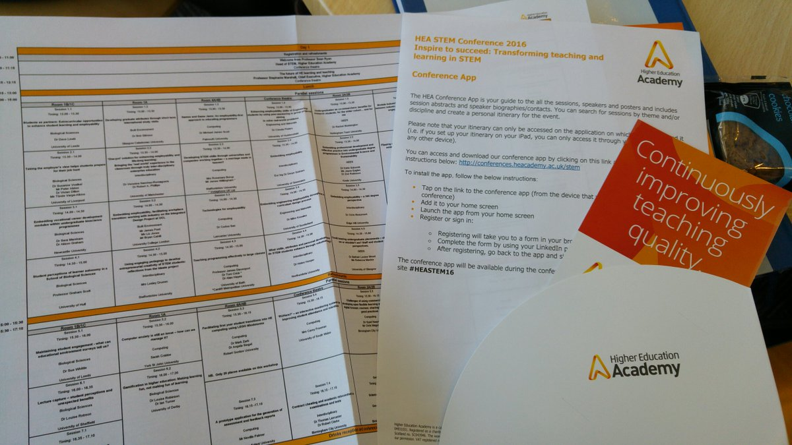
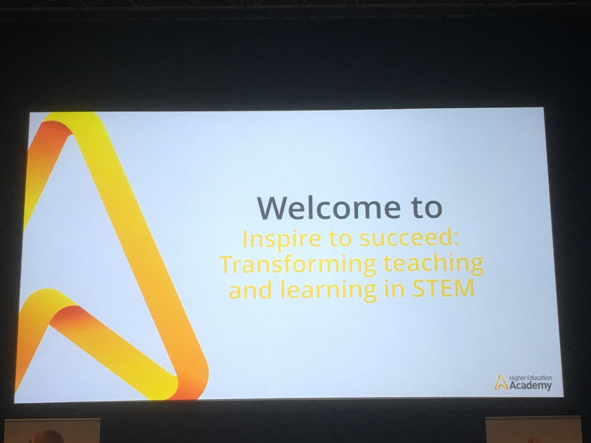
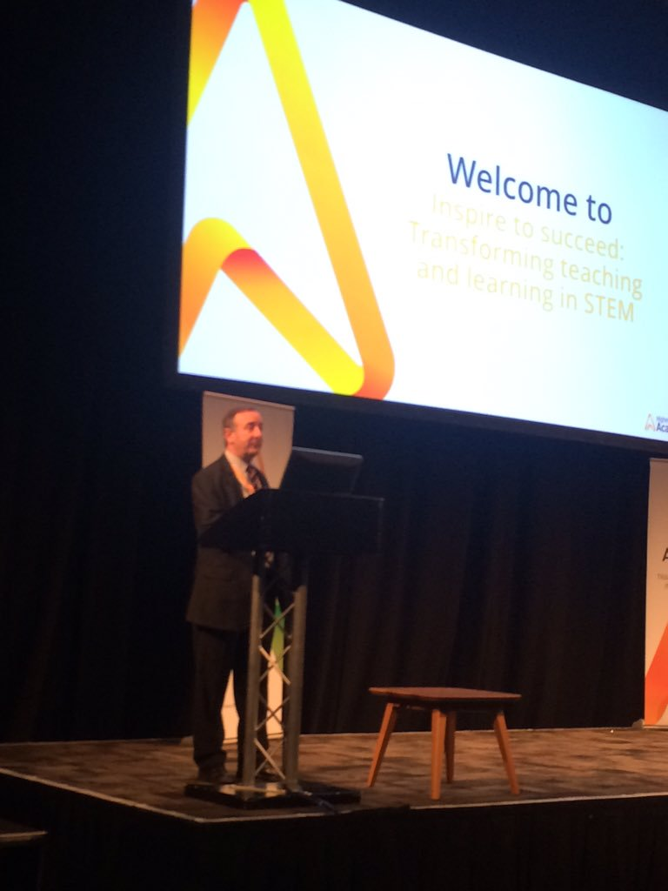
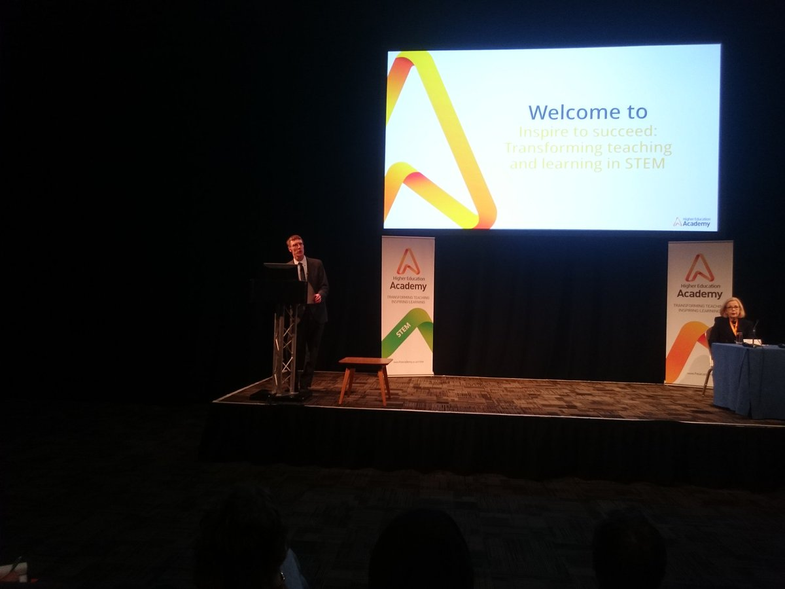
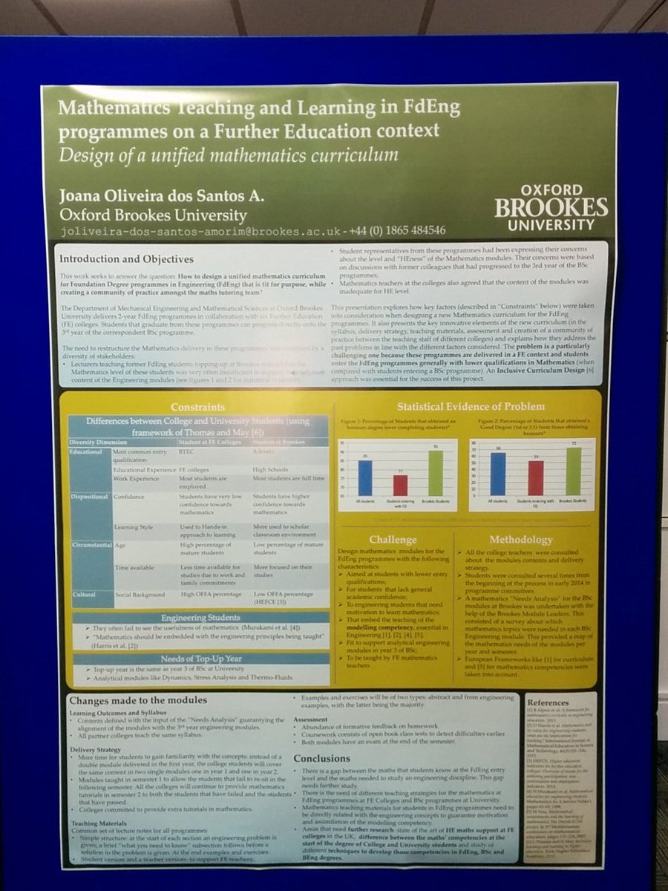
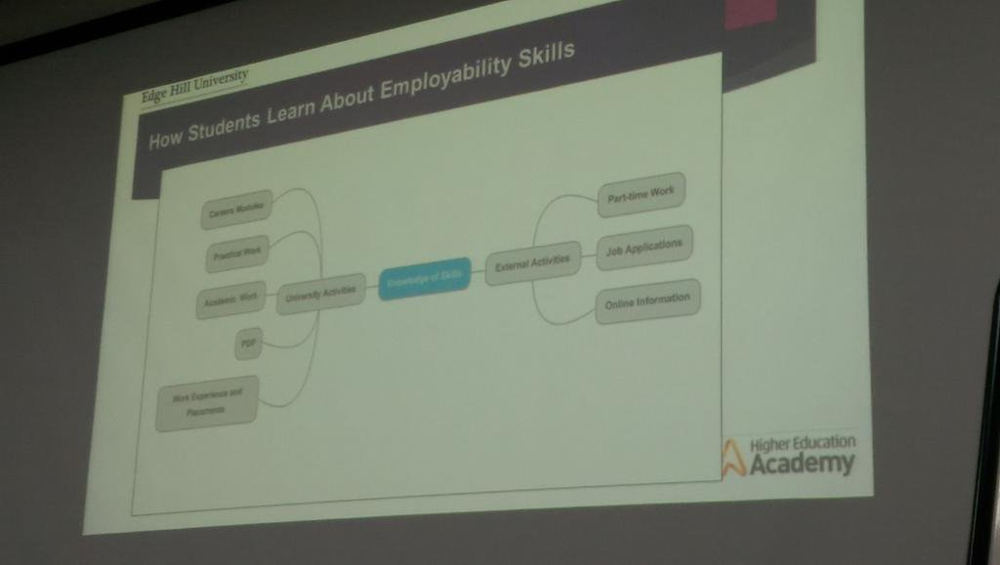
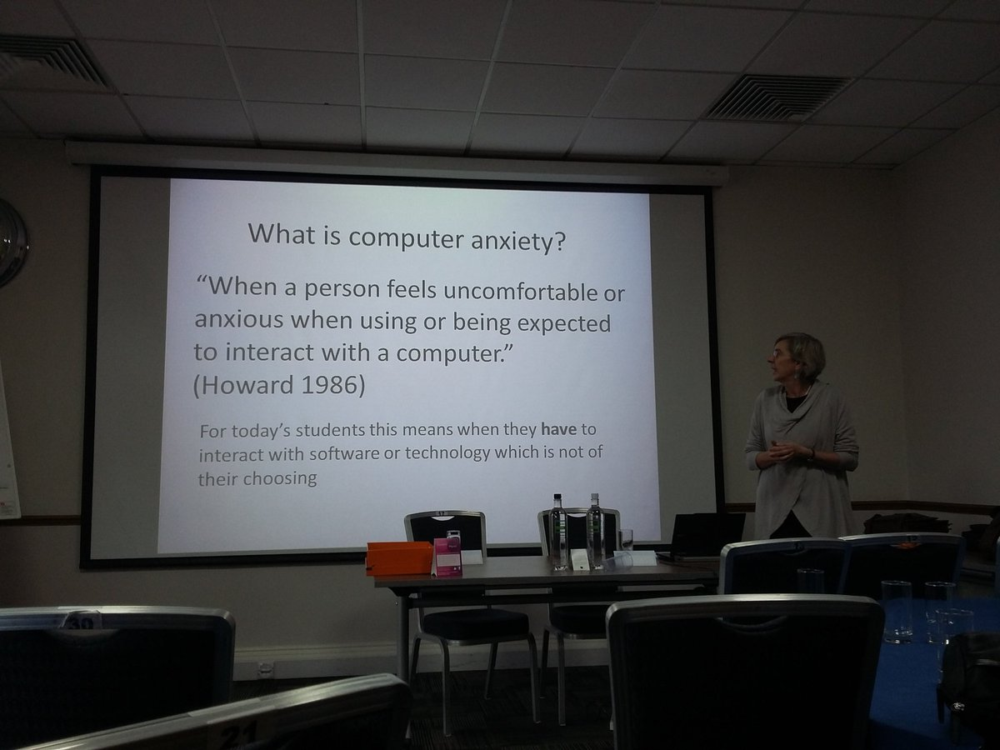
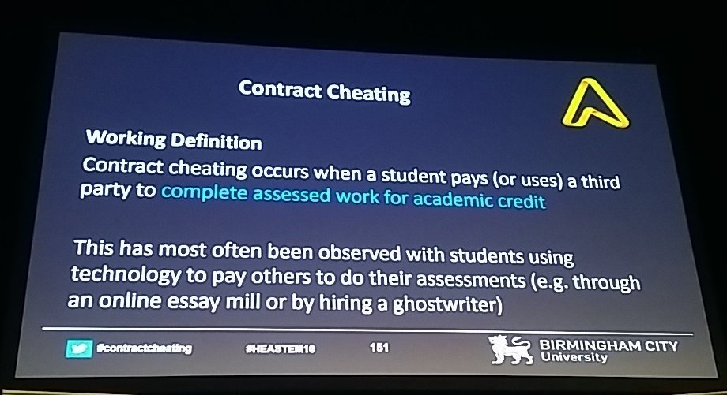
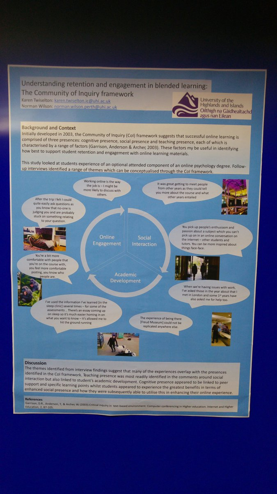
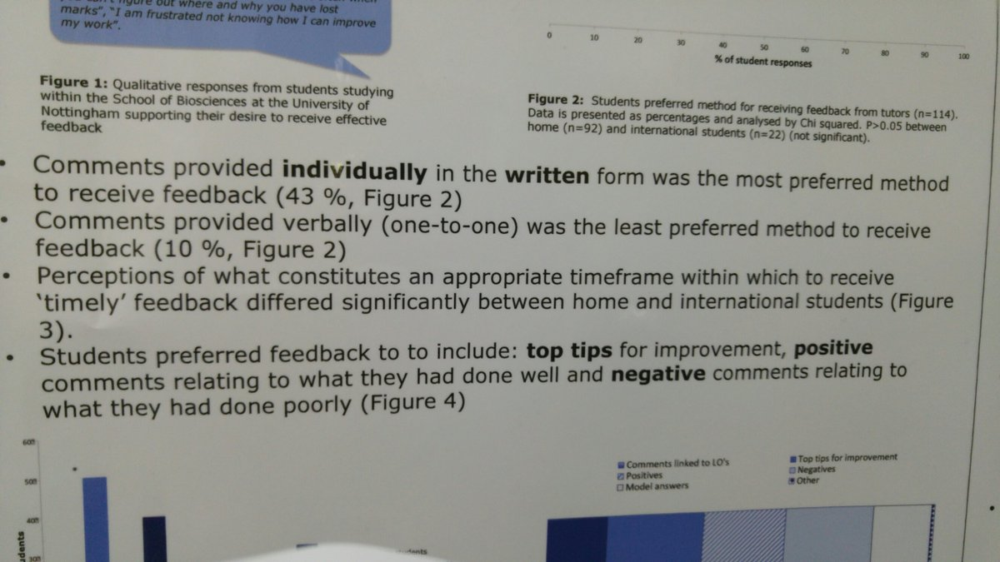

Edit
HEA STEM Conference Day 1
For now, a simple record of the tweets. Commentary and headings to be added.
- Silly question alert... What is the usual dress preference for a pedagogical conference like #HEASTEM16? Got caught out at physics conf once
- #HEASTEM16 is one of the most organised conference I've experienced! #HEAchat #LTHEchat https://twitter.com/hack_kay/status/692451599290126336
- @HEASTEM @ICJS_Research Thanks for the introduction, it has been a great start to #HEASTEM16, ready for more tomorrow!
- Thanks everyone, enjoy your evenings. Storify will be along in a little while. Enjoy #HEASTEM16 from near or far!
- As I said a whirlwind hour! #HEAchat #LTHEchat #HEASTEM16 https://twitter.com/kneaverchat/status/692452504995504128
- . Thanks @anortcliffe: will read on the long car drive to Nottingham tomorrow (if my driver will let me!) #HEASTEM16 #LTHEchat #HEAChat
- @S_J_Lancaster yes I am! Guess I should've told you more about me before I got you to tell me your password! #SocialEngineering? #HEASTEM16
- Look what's come in the post! #LTHEchat ers at #HEASTEM16 come and see me to claim your badge! cc @chrissinerantzi pic.twitter.com/L5dFf7U96W
- Itinerary all sorted for the conference tomorrow. #HEASTEM16
- still battling with the #HEASTEM16 itinerary for tomorrow.
- .@suebecks @chrissinerantzi oooh my precious! If there are any left over please keep one for me. #LTHEchat ers at #HEASTEM16
- For a conference that officially kicks off tomorrow #HEASTEM16 has an impressive network already pic.twitter.com/i1rR7hmZVf
 Giant burgers @original_annies to start #HEASTEM16 with @GrahamScott14 @AlisonIGraham @DominicCHenri @KEHplantsci pic.twitter.com/Bq0Cd4zX9F
Giant burgers @original_annies to start #HEASTEM16 with @GrahamScott14 @AlisonIGraham @DominicCHenri @KEHplantsci pic.twitter.com/Bq0Cd4zX9F- Link to the #HEASTEM16 programme: http://conferences.heacademy.ac.uk/stem/
- Heading to #HEASTEM16 - should be an interesting learning and teaching focused conference
- @HEASTEM Good luck for a successful and inspiring conference #HEASTEM16
- Getting in early for the Lego session #heastem16 pic.twitter.com/K2B01f3srB
- Off for a day at the #HEASTEM16 conference in Nottingham. I get to walk to work AND don't have to get up at 5:30 am - double bonus!!
- Right, time to hit the road for #HEASTEM16. Only 10 miles down the road but I still see it as an adventure... Pedagogical adventure perhaps
- Good morning to all at #HEASTEM16
- #heastem16 Willetts expects Universities to concentrate efforts on improving teaching https://twitter.com/timeshighered/status/692468410505101312 @timeshighered ditto Clarke03
- @HEAcademy How did I miss this again? Is there a mailing list I'm not on? Have a good one! #HEASTEM16
- and @DBevitt hitting #HEASTEM16 in Notts today.......
- Busy day for the @Science_Council team today! We're at #IBioIC16 and #HEASTEM16 today, and our annual meeting with @EngCouncil & @SocEnv_HQ
- Gearing up for #HEASTEM16! Should be a flipping good key note by @S_J_Lancaster
- Lots to discuss so good that I have an extended slot to talk on #contractcheating and academic misconduct in tests/exams at 16:15 #HEASTEM16
- Pre conference coffee! #HEASTEM16
- Have arrived at #HEASTEM16 with @DocWithTheSocs! See you later for some gamification
- @S_J_Lancaster elusive quest for that pot'o'gold! Hope #HEASTEM16 goes well.
- #STEM -focused student as partners reports launched today at #HEASTEM16 - http://bit.ly/1lVKSCo @HEASTEM pic.twitter.com/MSIaByJ6bK
- Can't wait for our workshop here! #HEASTEM16 pic.twitter.com/oeUGSa7ULU
- #HEASTEM16 with @JSD_Willingham @VodafoneUK presenting about out collaboration - so proud pic.twitter.com/xMv3Pe3tad
- Dr Katie Szkornink @kszkornik is today attending the Higher Education Academy conference #HEASTEM16 "Transforming teaching & learning..."
- Very chuffed & proud to be heading to #HEAstem16 to talk about @UoNBiosciences partnership work with @Science_Council @AliOrrSC @kellyvere
- Don't miss the chance to hear from @UoNBiosciences students in our #HEASTEM16 session today at 1.30 #RSci #placement https://twitter.com/uonbioscicareer/status/692080126553657345
- All set up and ready to doodle with the lovely folk @HEAcademy for #HEASTEM16 in sunny Nottingham pic.twitter.com/t3T5xbBDyy
- 10.30 and registration running smoothly. Come for your badge and reg pack! #HEASTEM16 pic.twitter.com/7AlVawX9Zd
- Reg pack supports our planning through both types of approaches: w/ the app and w/ paper #goodpractice #HEASTEM16 pic.twitter.com/KeB6gEOKge
- Celebrating our first FDSc ICT graduates from our apprenticeship program with @VodafoneUK - we're presenting in room 4a at 1.30 #HEASTEM16
- @HEASTEM At Inspire to succeed: Transforming teaching and learning in STEM http://heacademy.ac.uk/events-confere @HEASTEM #HEASTEM16
- Looking forward to a great day at #HEASTEM16. Presenting later on embedding #employability in the #maths curriculum.
- #HEASTEM16 Looking forward to the conference, presenting this afternoon, 'Module Industrial Mentors'.
- Made it to #HEASTEM16 safely. Rather a long queue for registration. Hope to still make the first keynote.
- 
- And so it begins... #HEASTEM16 pic.twitter.com/75LRghV3Uu
- We have a tweetboard! #HEASTEM16 pic.twitter.com/jTBt81PqPc
- Take the neuro highway! Active learning board game! #HEASTEM16 @colettebeecher1 pic.twitter.com/RWBHkZwdD5
- #HEASTEM16 about to start pic.twitter.com/HbmkD3hSNL
- Waiting for kickoff #HEASTEM16 pic.twitter.com/O977lVc8eR
- Ready for the off...#HEASTEM16 Anticipation building for first session https://twitter.com/sarahswansails/status/692662079472431104
- Here we go .... #HEASTEM16 pic.twitter.com/YBo97Ro8jF
- Bill Skyner keeping us safe! #HEASTEM16 pic.twitter.com/b1hCpOP377
- Arrived at the #HEASTEM16 Conference (@ University of Nottingham - @UniofNottingham) https://www.swarmapp.com/c/1rgID8idsbQ pic.twitter.com/R2pIhs76MB
- Bill Skyner kicking off #HEASTEM16 - an excited buzz in the lecture hall! pic.twitter.com/OpayKgdnIt
- "time to sit up and listen" regarding teaching and learning outcomes at university. #HEASTEM16 pic.twitter.com/GhZM67sh2S
- Best practice changes but excellence remains? #HEASTEM16
- Best practice changes over time - good point but a good place to start #HEASTEM16

- Best practice also varies from teacher to teacherwhat works for one doesnt always work for another. #HEASTEM16 https://twitter.com/drmarkjepson/status/692665429416873984
- Get your mobile phone out! And share says @sgryanUH #HEASTEM16
- Sean Ryan, Head of STEM, encouraging us to share practice from #HEASTEM16 with colleagues and through Twitter pic.twitter.com/nwg5w5eY0D
- @sgryanUH encouraging us to get our mobiles out and share what we're learning #HEASTEM16
- @UniofNottingham #HEASTEM16 we will be sharing good practice through social media over the next few days
- No phones off at this conference - everyone being encouraged to share ideas with everyone out there! #HEASTEM16
- #HEASTEM16 "Not away from research but towards teaching" Sean Ryan. Nicely put. #Multitasking
- we sit further back because we know if the zombies come, they come through the front doors first. #HEASTEM16
- #HEASTEM16 TEF mention count: 1 (we're off)
- We've got 40 minutes to come up with a list we can compare to professor Marshall's.... Ideas? #HEASTEM16
- Professor Stephanie Marshall delivering the first keynote, talking about delivering teaching excellence #HEASTEM16 pic.twitter.com/QSpjwIED0Z
- Stephanie Marshall now discusses Inspire to Succeed : the role of the HEA #HEASTEM16 @HEASTEM @HEA_chat pic.twitter.com/8hIZWuE84l
- Nobody has been closer to TEF than Stephanie Marshall #HEASTEM16 pic.twitter.com/l4niiHRSEQ
- A list of what makes a good teacher. Missed that important key subject of my tweet! #HEASTEM16
- Rosey's at #HEASTEM16 this week, look out for her tweets from the conference. @UWLINSTIL @UWLTEL @HEAcademy
- Facilitating Inspiring to learn to learn #HEAstem16
- Best practice is a continuously evolving thing, needs change @sgryanUH #HEASTEM16
- Best practice is a continuously evolving thing, needs change @sgryanUH #HEASTEM16
- .@sgryanUH advocating the sharing of emerging practice (as opposed to best as practice keeps changing) through social media #HEASTEM16
- Prof Marshall discuss the value of the HE practitioner as a facilitator for learning through inspiration https://www.heacademy.ac.uk/person/professor-stephanie-marshall #HEASTEM16
- No conference hashtag visible on the current set of HEA slides (rookie sharing practice mistake) #HEASTEM16
- Settling in to #HEASTEM16 with James Ford. Looking forward to talking about the @CEGE_UCL 4th Year Integrated Design Project after lunch.
- If we need STEM subjects to tackle thorny issues, does that mean teaching excellence = brain washing to a particular view? #HEASTEM16
- First mention of @JoJohnsonMP at #HEASTEM16 at 11:15
- Great start to #HEASTEM16 setting the scene for the future of teaching in HE
- OK, how can we effectively prepare students for a world of work when we have no sense what that world looks like in 10 years? #HEASTEM16
- Beginning of HEA STEM conference #HEASTEM16 pic.twitter.com/m5glSiSpfZ
- A lot of focus - unsurpprisingly! - on the Teaching Excellence Framework. #HEASTEM16 @UWLINSTIL @UWLTEL @HEAcademy
- Student Satisfaction not a useful metric for teaching quality #HEASTEM16
- Esteem is in the eyes of the esteemer #HEASTEM16
- #HEASTEM16 is now trending in UK, ranking 42
- Being asked if we are concerned about KISyes, because its rarely correct, and reduces excellence to dry numbers. #HEASTEM16
- Stephanie championing a narrative around TEF metrics. #HEASTEM16
- #HEASTEM16 Yes but KIS aggregates too many subjects and degrees so dilutes really good news stories.
- And it (KIS) has a stupid TLA. #HEASTEM16
- "Original thinkers, engaged learners (and employable)" Jo Johnson said in 2015 #HEASTEM16
- Professor Marshall stressing universities must have solid career plans for staff so they can progress through teaching to chairs #HEASTEM16
- Teaching is at the heart of the TEF for HE in the UK #HEASTEM16 pic.twitter.com/7VBrb7Crjo
- Relating to staff qualified to teach at university - what makes somebody qualified? #HEASTEM16
- #HEASTEM16 "How do we ensure students can progress?" Fair ... but how can we ensure students meet their responsibilities?
- 86% average? Requires improvement! #HEASTEM16
- Issues to be put at the forefront of learning and teaching through the Teaching Excellence Framework #HEASTEM16 pic.twitter.com/0tJ4PHpiVY
- Continual drive for improvement based on NSS are admirable, but often not human friendly from staff POV Good enough sometimes is. #HEASTEM16
- Just finishing a few final tweaks for my talk at the #HEASTEM16 conference tomorrow! How to engage students in stats and methods @HEASTEM
- #HEASTEM16 Where do define the discipline levels? In line with the JACS subject groups?
- .@tombramald it's not one or the other - they can only progress by becoming independent, critical, reponsible learners #HEASTEM16
- Stephanie arguing for discipline level focus. #HEASTEM16
- @AdrianaGWilde #HEASTEM16 Absolutley. We have a huge responsibility but it is a dual responsibility.
- Pedagogic research network #HEASTEM16
- Have fun @DocWithTheSocs Participating via #HEASTEM16 & in person on Friday https://twitter.com/damianparry/status/692639790504738816
- How do you measure graduate attributes? #HEASTEM16 what are the core values we need in graduates?
- "Let's talk about #employability not employment" (agreed completely - but hasn't that already been the agenda for years?) #HEASTEM16
- We at @uniofeastanglia are looking at learning gain. #HEASTEM16
- Pedagogic research network we need to engage there to mature as TFs & demonstrate impact of our teaching within our disciplines #HEASTEM16
- Who is involved in learning gain projects? #HEASTEM16
- BIS have 600+ responses to TEF consultation #HEASTEM16
- #HEASTEM16 teacher excellence pic.twitter.com/APHUuxo0nG
- Defining dimensions of teacher excellence #HEASTEM16 pic.twitter.com/0rvEfTquLC
- Talking about Teaching excellence, is often simply defined as doing a lot of teachinggood to hear about other definitions #HEASTEM16
- Defining dimensions of teacher excellence (we should meet all of these) #HEASTEM16 pic.twitter.com/2trEs6DwzG
- Expect students to integrate module learning? We must work across programmes too to have explicit links #HEASTEM16 @drsimonhogg
- I (Rosey!) really recognise the move from solo to team planning & teaching that Prof Marshall's discussing here #HEASTEM16
- We need strategic leaders in Teaching and Learning #HEASTEM16 pic.twitter.com/LHOkpaEGsx
- BIS recognise the value of leadership in T&L #HEASTEM16
- defining Teaching Excellence but it's complex with other agendas/issues driving the student & lecturer #HEASTEM16 pic.twitter.com/Vin196wKpS
- Teaching excellence goes beyond teaching quality #HEASTEM16
- @Scooby1969 #HEASTEM16 very well said, Hugh.
- "TEF matters as it puts teaching at the heart of the system" - & there is no real contradiction with #learnercentered approaches #HEASTEM16
- Professor Marshall opening keynote at #HEASTEM16 pic.twitter.com/354RW4TQF6
- Feeling guilty about my pointless bulllet point stance with @HEAcademy new graphics. #HEASTEM16
- . @RajeshDhimar you handsome fellow #HEASTEM16
- The wonderfully talented @SimonHeath1 capturing the keynote #HEASTEM16 https://twitter.com/SimonHeath1/status/692671769254174721
- Is teaching patchy? Does UKPSF eliminate patchiness? #HEASTEM16
- Don't forget the hashtag ! #HEASTEM16 @HEASTEM @HEA_chat @LTHEchat @HEA_Events pic.twitter.com/bJV4TLOxSd
- Consistently excellent #HEASTEM16
- The #HEASTEM16 hashtag is being ambushed already and the conference only just getting going (the dark side of social media)
- We have some artists at our STEM conference! #HEASTEM16 https://twitter.com/SimonHeath1/status/692671769254174721
- .@S_J_Lancaster but it's worrying if focus goes away from research quality & those new to HE find themselves spread out 2 thinly #HEASTEM16
- Enjoy #HEASTEM16 @NoelAnn - must tell #maths students about all the #ORMS + other employers chasing their skills https://twitter.com/NoelAnn/status/692659713272631296
- AFHEA for PhD studentships #HEASTEM16
- Really exciting to be at #heastem16 very interesting overview of challenges to teaching from HEA
- An inspiring conference addition - we have an artist in residence capturing the event visually #HEASTEM16 https://twitter.com/simonheath1/status/692671769254174721
- @S_J_Lancaster Not embarrassed at all. Face of the HEA. Someone's got to do it. #HEASTEM16
- Frameworks | Higher Education Academy #HEASTEM16 join the debate(s) https://www.heacademy.ac.uk/frameworks-toolkits/frameworks
- Don't forget to use the conference app to keep track of all the inspiring sessions at #heastem16 http://bit.ly/1KuxmvU
- #HEASTEM16 I think they like you... @S_J_Lancaster
- Half a dozen NTFHEA in the room, virtually everyone else a FHEA, and quite a few more are SFHEA, that's pretty amazing! #HEASTEM16
- #HEASTEM16 shout out for @UniofNottingham @UoNBiosciences fab Prof Martin Luck one of a few NTFs at #Heastem16 today
- Welcome to the HEA toolkits | Higher Education Academy #HEASTEM16 https://www.heacademy.ac.uk/frameworks-toolkits/welcome-hea-toolkits
- .@DrLancaster this may backfire as these people posting will find themselves being muted by all (do mute them!) #letskeepontopic #HEASTEM16
- HEA moving to professional membership #HEASTEM16 pic.twitter.com/h855ddTiIS
- Professor Marshall discussing the challenges for the Maths discipline in being allowed to keep blackboards, I've also found this #HEASTEM16
- @S_J_Lancaster AFHEA for anyone who is teaching/supporting in HE. #careers #professional #technicians #student support #HEASTEM16
- "Different approaches for different subjects" but also within subjects - e.g. teaching stats for psych v. teaching philosophy #HEASTEM16
- Sometimes old tech is the most appropriate tech #HEASTEM16 pic.twitter.com/qp5N4Ewq0R
- Professional membership is key to driving teaching excellence, #HEAstem16 but unis need to support staff, reflection pic.twitter.com/CNYTmLIBek
- Thanks @AdrianaGWilde, good idea, just muted them all. Unfortunately I expect that they're completely automated accounts #HEASTEM16
- #HEASTEM16 Are Universities approaching a perfect storm of initiatives and ambitions that don't always complement one another?
- Keeping an eye on #HEASTEM16 today. Some very cool people at that conference.
- My take away f this talk is 2 critically review own CPD to see what I need 2 do 2 grow as a practitioner #HEASTEM16 https://twitter.com/ICJS_Research/status/692666620389560320
- @DrLancaster @AdrianaGWilde Can also be taken as a sign of so many delegates getting involved that it's deemed worth hijacking #HEASTEM16
- Spotting quite a few delegates wearing smart watches today (an area of interest for my #contractcheating talk at 16:15) #HEASTEM16
- Pedagogy or Andragogy? I had only heard of andragogy during my time in FE #terminology #HEASTEM16
- All of us mathematicians in the room have had to defend the "blackboard" at some point! #HEASTEM16 https://twitter.com/malc851/status/692675111095287808
- @kjhaxton if the zombies arrive while I am talking please don't rely on Twitter to tell me. #HEASTEM16
- Wish I was at #HEASTEM16 - shout out to all the wonderful people there - following on twitter :-)
- Preparing for professional life, is it pedagogy or is it andragogy? #HEASTEM16 a new language needed or repurposing existing language?
- Anyone else willing to admit they just had to Google "andragogy"?! #HEASTEM16 #shamefulignorance
- #HEASTEM16 And there's a question capturing the perfect storm concern.
- Inspiring lecturers are often constrained by their environments due to lack of imaginative thinking by their institution #HEASTEM16
- Prof Marshall says "no tweeting of this please" how may of you quoted her in a tweet? #HEASTEM16
- Delegate suggests "Andragogy" is politically incorrect (do only men access HE?) though maybe it reflects current state of STEM #HEASTEM16
- Lets back up our bloody awkwardness with evidence #HEASTEM16
- #HEASTEM16 Engagement more valuable a measure than satisfaction ... but difficult to evidence. Hammer and nail interface described there.
- @S_J_Lancaster but continue being bloody awkward... Important for progress not if trying to prevent change! #HEASTEM16
- #HEASTEM16 interesting question from floor, "We have 100s of research profs, will we ever have 100s of teaching profs?"
- What is "deli"? I keep thinkinp that there is some poor cooked meat vendor getting the blame for teaching problems. #HEASTEM16
- For those at #HEASTEM16 & the debate around preparing students for their professional life-this is an excellent read https://twitter.com/davidjmilne2/status/688480144823050241
- Stephanie Marshall 'constantly question, collect evidence and be persistent' for institutional support for teaching innovation #HEASTEM16
- Excellence inflation: excellent good standing < excellent distinction #HEASTEM16
- We should look at the PAH Continuum: Pedagogy, Andragogy & Heutagogy http://wp.me/p2Ymfo-2d via @fredgarnett #HEASTEM16
- .@drmarkjepson @S_J_Lancaster the most inspiring lecturers tend to call themselves as "bloody awkward" for some reason @Suuki #HEASTEM16
- Questions from the floor address huge pressure in Research Led Institutions to recognise a teaching-focused path as valuable #HEASTEM16
- The language around parity of esteem in teaching, mention for good work being done at UCL by @DevonDilly #HEAStem16 https://twitter.com/hea_research/status/691373803528654848
- Great posts and buzz coming out of #HEASTEM16 already, I spy @SimonHeath1 is in business bright and early. https://twitter.com/SimonHeath1/status/692671769254174721
- #HEASTEM16 questioning if the term pedagogy aligns with facilitating learning https://twitter.com/fredgarnett/status/692679891968458753
- Excellence can't be measured only by student satisfaction, delegate suggests #allmetricsareflawed #HEASTEM16
- "Can everyone really be above average?" (great point from the floor) - answer "we need the pursuit of excellence" #HEASTEM16
- Its a good point - if everything is excellent, thats the new norm - what comes then? #HEASTEM16 post-excellence world?
- If we are all expected to be excellent, how can anyone be actually be excellent? #HEASTEM16
- @AdrianaGWilde student satisfaction is a very weak measure, give the. What they need not what they want #HEASTEM16
- #HEASTEM16 interesting points from the floor about excellence, and nice comparison with jazz music!
- New HEA research shows change is needed in professional development for staff who teach mentioned at #heastem16 https://www.heacademy.ac.uk/about/news/new-hea-research-shows-change-needed-professional-development-staff-who-teach
- Oh I had wondered when would the word "triangulation" would come up. 1 hour in, not too bad ;-) #HEASTEM16
- Follow up point "can students recognise excellence?" I've seen many examples of students rating entertainment value over content #HEASTEM16
- Excellent point. Who gets to say what's excellent? Deeply flawed. #HEASTEM16
- #HEASTEM @DevonDilly new research, rewarding educators leaders in research intensive institutions cited at today's #HEASTEM16 conference
- Practising academics tend to focus on the immediacy of their teaching, valuing the change in our students learning and lives #HEASTEM16
- Coming back to metrics - caution: too much focus on them will actually have a negative impact on our learners #HEASTEM16
- Professor Marshall says sometimes you have to be "bloody awkward" to get stuff done. #HEASTEM16 pic.twitter.com/jjnTjf4Kp9
- Expecting so indicates a poor understanding of statistics :-) ... but we can all strive to that #HEASTEM16 https://twitter.com/drmarkjepson/status/692680577254846464
- 
- #heastem16 @HEASTEM HEA Chief Executive Stephanie Marshall "applauds the blackboard". Maths lecturers rejoice!
- The longish queue for the ladies made me hopeful for gender equality in STEM #HEASTEM16
- Great lunch but too few seats #HEASTEM16
- @AdrianaGWilde may be more about 'charisma' #HEASTEM16
- @willhaywood are you at #HEASTEM16?
- Following #HEASTEM16, sincere thanks to those tweeting
- OK all you #HEASTEM16 tweeters, I can't be in 20 places at once this afternoon so keep the timeline buzzing for doodle inspiration!
- #HEASTEM16 keynote Prof Stephanie Marshall - how to teach learners to learn - inspire them! @HEASTEM pic.twitter.com/GfFE2qdfnK
- Derek Raine and Sarah Gretton Student perceptions of embedded employability skills #HEASTEM16 pic.twitter.com/XghWPJhRxn
- @LadySarahG a packed room for a key discussion on student perceptions of embedded employability skill #HEASTEM16 @HEASTEM
- No chair in this session! #HEASTEM16
- Students perceptions of embedded employability. Using 'authentic assessment'. #HEASTEM16
- The learning cycle for employability embedding #HEASTEM16 pic.twitter.com/N6Un3vmaEN
- Bob Gilmour about to start! And I'm thinking of our ERASMUS students #HEASTEM16 #internationalstudents pic.twitter.com/zLO9DWFUPz
- Hmmm... no session chairs #HEASTEM16 - we all know how good academics are at sticking to time. This is going to be interesting!
- Authentic assessment #HEASTEM16 pic.twitter.com/CMxDQBq829
- Leeds - partnership agreement, what students can expect from staff and vice versa. Great way to phrase it. #HEASTEM16
- Authentic assessment: pitches, expert witness, podcast, national geographic videos, journal article, POST note etc... Excellent! #HEASTEM16
- Michael Scott from Falmouth talking about improving #employability and business links through game jams #HEASTEM16 pic.twitter.com/N9JiMl94pn
- Summary of opening from The HEA #HEASTEM16 pic.twitter.com/qojV1iJvvd
- Students found to be most often rejected from games jobs due to lack of relevant experience #HEASTEM16
- Education research internships - students working in partnership with academic staff. Extracurricular workfitted around studies. #HEASTEM16
- Students as partners Healey and Flint #heastem16 pic.twitter.com/49KPL2gQrs
- Game and Game Jams: employability 1st. Mention to @Nigel_Shadbolt report. CS graduates highly employable! #Heastem16 pic.twitter.com/XrTeFYCi2V
- MDs of SMEs not necessarily graduates, need support in negotiating university structures and language. #MSOR #HEASTEM16
- Partnerships are paid work fitted around studies - 1/3 of money up front, agreed objectives & timelines to get the rest #HEASTEM16
- Very strange room layout with delegates sitting around tables and a tiny TV screen - most people don't have a viewable angle #HEASTEM16
- Games Academy @FalmouthUni to address skills shortages in Computing & improve employment rates #HEASTEM16 pic.twitter.com/KtobBdVbvw
- Pop up science - students doing outreach, minimal academic interaction - brilliant ideal #HEASTEM16
- Students highlighted most important skills are: Indep learning Reaseach skills Problem solving Because they are told it is? #HEASTEM16
- platform vibe critical for engaging students, staff and employers #HEASTEM16
- platform vibe critical for engaging students, staff and employers #HEASTEM16
- Hello #HEASTEM16 tweeters, really useful to use a photo as profile picture - leads to a lot more interactions over tea :)
- Feeling envious of Dr Bob Gilmour's European Study Trips for Glasgow Calendonian's Civils students. Ahh, Lampeter! #HEASTEM16
- Enhancing psychological literacy entrepreneur tasks #HEASTEM16 @AleciaCotterell Patrick Rosenkranz @newcastleuni pic.twitter.com/4HibXoDmek
- Wealth of skills developed through student partnership - Dave Lewis #HEASTEM16 pic.twitter.com/bMxva6ZDSA
- @kjhaxton I'm in disguise, I have my glasses on today! #HEASTEM16
 Student perceptions of learning effectiveness #HEASTEM16 pic.twitter.com/o4SNUmS6RQ
Student perceptions of learning effectiveness #HEASTEM16 pic.twitter.com/o4SNUmS6RQ- RT ICJS_Research Enhancing psychological literacy entrepreneur tasks #HEASTEM16 AleciaCotterell Patrick Rosenkranz pic.twitter.com/ifkEkvg62o
 Contrast with alumni perceptions! #HEASTEM16 pic.twitter.com/AuioCuWw73
Contrast with alumni perceptions! #HEASTEM16 pic.twitter.com/AuioCuWw73- @IScienceUoL giving an interesting session at #HEASTEM16 - very honest about some areas of L&T that need work.
- "I'm honestly surprised by the amount that I'm learning" - value of student partnerships from @lewisd99 #HEASTEM16
 Michael James Scott demoes SpaceChem as an enjoyable intro to programming @rikkiprince @FalmouthUni #HEASTEM16 pic.twitter.com/e8mhGqXmBD
Michael James Scott demoes SpaceChem as an enjoyable intro to programming @rikkiprince @FalmouthUni #HEASTEM16 pic.twitter.com/e8mhGqXmBD- really great session by @lewisd99 lots of wonderful ideas and clearly enthusiastic students! #HEASTEM16
- Best student quote so far "I can feel my brain trying to leak from my eyes" in response to programming games initiative #HEASTEM16
- "Typically a games jam at universities is done across 10 working days" is that true? @BCUGAMESTECH #HEASTEM16
- Substantial number of people in the room are involved with #GlobalGameJam this weekend (we are at @MyBCU too) #HEASTEM16
- Inspiring talk on a model of and the value of students as partners to students, staff and faculty from David Lewis @ Leeds for #HEASTEM16
- Many games made by first year students said to be unplayable due to critical design issues, but experience valuable #HEASTEM16
- Learning about game jams for programming a game in a short time frame .. Gamification in action http://bit.ly/1QuIVIe #HEASTEM16
- @GrahamScott14 make them want what they need :-) #HEASTEM16
- #HEASTEM16 Dave Lewis - By giving our students opportunities to be responsible adults, they become responsible, employable adults!
- But this is the nature of group programming. We have addressed this @unisouthampton with great success. #HEASTEM16 pic.twitter.com/P8KZIJpFgc
- Standing room only in 2c..#HEASTEM16 pic.twitter.com/hlF9uMlSYx
- @OBU_MEMS Really nice ideas on how to get students and employers talking! #HEASTEM16
- Everyone in this room is way too polite to tell the presenter he's run out of time (and hadn't even started questions yet) #HEASTEM16
- #HEASTEM16 now trending in UnitedKingdom http://twitter.com/search?q=%23HEASTEM16
- Excellent talk re. Psychology literacy & enterprise learning - students of Newcastle came up with brilliant ideas! @StudentsNCL #HEASTEM16
 Food for thought! #heastem16 pic.twitter.com/qAmwkxEJSW
Food for thought! #heastem16 pic.twitter.com/qAmwkxEJSW- @hack_kay It makes it very difficult for later presenters in the session - or when people want to change rooms between talks #HEASTEM16
- Using challenges to facilitate entrepreneurial learning #HEASTEM16 @UniofNottingham @UoN_SHS we are doing this #interprofessional #teamwork
- Lots of great discussion about using agile development, user stories, algorithm refinement, user stories etc with year 1 games #HEASTEM16
- Susanne Voelkel: Important to make students aware of their digital profile - view it as an employer would #HEASTEM16
- i like this definition: employ-ability, less about employ, more about ability #HEASTEM16
- Team from Staffordshire now going to look at university and industrial partnerships #HEASTEM16 pic.twitter.com/ET468uko8d
- Voelkel: students also formed interview panels and viewed their peer's digital profiles, performed interviews and gave feedback #HEASTEM16
- Yep, that was what .@lewisd99 was like :) #HEASTEM16 https://twitter.com/SimonHeath1/status/692703063593861120
- Lots of videos being played during talks this year - conference presentation styles have really changed #HEASTEM16
- Authentic assessments should be challenging #HEASTEM16 pic.twitter.com/eGLgvHyl2k
- Voelkel: however students preferred to be interviewed by staff than their peers, but found being the interviewer useful #HEASTEM16
- Always good to hear directly from a student - great insight on embedded employability from Aska @Newman_Uni #HEASTEM16
- @kjhaxton Ill make a deal with you. every definitive definition of a HE buzzword you tweet me I will add to keynote! #HEASTEM16
- Students as partners: We do this @unisouthampton too. Thinking of @call_me_olya #goodpractice #HEASTEM16 https://twitter.com/UWLPsych/status/692704057140576256
- Woohoo! A first for me - using clickers in session with @NoelAnn Am clicking with gusto #HEASTEM16 pic.twitter.com/ri8qXIW5Aq
- @S_J_Lancaster decent challenge that #HEASTEM16
- Click away! ... clickers, zappers ... tom-ay-to, tom-ah-to... #buzzwordbingo #HEASTEM16 https://twitter.com/HEAEducation/status/692704682607820800
- #HEASTEM16 Susanne Voelkel - 3 out of four students found acting as an interviewer a valuable experience pic.twitter.com/DuyJdNHqwF
- #HEASTEM16 @sara_marine Students need to see their digital profile as employers would pic.twitter.com/I40NBBxVB8
- Interesting talk on combining the real-world, enterprise education and STEM from @OfficialUoM #HEASTEM16
- Voelkel: comprimise - students from different programmes will form interview panel chaired by a staff member #HEASTEM16
- Students presenting on how valuable Science Council's Registered Scientist is to reflect on placements @UoNBioscicareer #HEASTEM16
- #HEASTEM16 important to recognise development of identity in students on their Uni journey, young minds to changed minds @HEAcademy
- students struggle with tasks where there is no single right answer. Much like HE buzzword definitions :) #HEASTEM16
- Link to info on the Literacies4employability app developed by @alexckendall & co @MyBCU @NoelAnn http://ln.is/www.bcu.ac.uk/resear/3pS1l #HEASTEM16
- @UniofNottingham @UoNBiosciences Judith Wayte @kellyvere blazing the trail on placements, employability and Registered Scientist #HEASTEM16
- .@ICJS_Research and me ready to #blogsquad day 1 #HEASTEM16 and the waiting area is buzzing with anticipation! pic.twitter.com/282WfFbraR
- Screens dotted around bring the conversation out from Twitter into the face to face #goodpractice #HEASTEM16 pic.twitter.com/CL1M4Mt44I
- Vygotsky and scaffolding the Zone of Proximal Development by Bryn Coles from Newman Uni #HEASTEM16 #buzzwordbingo pic.twitter.com/hijaGWfinn
- Interesting session on embedding core skills - reflective portfolios show positive benefits to students. #HEASTEM16 pic.twitter.com/Er2Tra7IbL
- Should students be banned from wearing boxer shorts during exams? Have your say during my session at 16:15 #HEASTEM16
- #HEASTEM16 we need to view students as partners pic.twitter.com/nRW73pe44S
- Mike Knowles from Sunderland (ex-UoS) #HEASTEM16 pic.twitter.com/eI9gXLFBFO
- #HEASTEM16 The magic word is "embedded"....very true!
- Finding space for employability enhancement activity in a crowded curriculum can be a challenge @sara_marine #HEASTEM16
- Corona Sas from Lancaster now talking about technologies for employability #HEASTEM16
- Video CVs - a short video to sell ones self on the graduate market. #HEASTEM16 Brilliant idea (also sounds quite torturous)
- Mike Knowles: Too many project students focus (wrongly) on the product rather than the project process #session3_4 #HEASTEM16
- #HEASTEM16 @DrLancaster Should students be allowed to wear boxer shorts during exams? YOU decide... pic.twitter.com/IuoZGH86rk
- Just given our presentation! A big thank you to those who came @StaffsDigital @JSD_Willingham @VodafoneUK #HEASTEM16 pic.twitter.com/N0xLTN0boP
- #HEASTEM16 how students in Edge Hill Uni learn about employability skills pic.twitter.com/5rV578yAfV
- Very proud of @UoNBiosciences Suzanne and Sam sharing their experiences of RSCi during their placement #HEAstem16 pic.twitter.com/hMhiLMNaQJ
- #HEASTEM16 @sara_marine @AlisonIGraham Talking to us about modules with embedded vocational employability! pic.twitter.com/0rxS2K88iS
- Well if their parents took them to school in pyjamas, maybe they have grown to think this is acceptable! #HEASTEM16 https://twitter.com/SimonHeath1/status/692710045017075712
- .@call_me_olya never thought of you as Robin! #HEASTEM16 https://twitter.com/SimonHeath1/status/692708527706673152
- Video CVs allows greater creativity, may take longer to prepare and give sense of person #HEASTEM16 I have concerns about unconscious bias
- Interesting study being presented looking at the value of video CVs and how they should be structured/presented for employability #HEASTEM16
 #HEASTEM16 employability in university programmes? Yes it is there! pic.twitter.com/eMV2qT0Y3H
#HEASTEM16 employability in university programmes? Yes it is there! pic.twitter.com/eMV2qT0Y3H- with discussion about coming across more convincingly, video CVs seem to favour charismatic, enthusiastic, (pseudo) extraverts. #HEASTEM16
- Need a script for vidCV, express motivation for job, show off social skills (but not everyone has those despite great skills) #HEASTEM16
- The value of a video cv - employer feedback: demonstrates genuine interest in careers progression, motivation, personality #HEASTEM16
- Useful framework for project setting and engineering literacies #HEASTEM16 pic.twitter.com/IIetgq8knW
- Learning about cpd for students at #HEASTEM16 lots of good ideas from Dave Lewis.
- Video CVs found to be good for jobs where students need to show personality, like media or PR, but not wanted for banking, law #HEASTEM16
 #HEASTEM16 students want less focus on employability skills in their 1st year...more focussed on finding feet then pic.twitter.com/hQTW5exg5p
#HEASTEM16 students want less focus on employability skills in their 1st year...more focussed on finding feet then pic.twitter.com/hQTW5exg5p- @suebecks this sounds interesting, but aren't most employers moving to directed online forms? Limiting creativity. #HEASTEM16
- It's important to tailor a digital cv to the organisational culture #HEASTEM16
- This is bound to come up in #HEASTEM16 #planning is one of my #buzzwordbingo https://twitter.com/cbokhove/status/692500181292572672
- For a video cv need to keep eye contact with camera, have a clear narrative, professional attire #HEASTEM16
- Video CVs found to be needed to be presented in a professional environment, e.g. plain background or bookshelves - no beds #HEASTEM16
- Recommends length of a digital cv is 30 sec - 2 mins #HEASTEM16
- Video CV recommendation, max 2 minutes, intersperse candidate with examples of work completed and portfolio #HEASTEM16
- Video CV - keep it short, but need to think about performance and narrative to convey the right impression to an employer. #HEASTEM16
- Where a paper cv is formal a video cv allows for creativity #HEASTEM16
- Students. Make like Zoella and get a video CV #HEASTEM16 pic.twitter.com/sUKBpnbLvD
 Latest network update for #HEASTEM16 pic.twitter.com/rBt1qdqmpP
Latest network update for #HEASTEM16 pic.twitter.com/rBt1qdqmpP- A video cv should showcase prior achievements including project demos #HEASTEM16
- Finding that students should be given drama coaching to make the most of video CVs (I'd suggest that coaching for lecturers too) #HEASTEM16
 @NoelAnn great talk on embedding enployability in maths curriculum :best to integrate skills development #HEASTEM16 pic.twitter.com/HWWTOZr9IG
@NoelAnn great talk on embedding enployability in maths curriculum :best to integrate skills development #HEASTEM16 pic.twitter.com/HWWTOZr9IG- #HEASTEM16 who's responsible for delivering employability skills? Academics are asked..interesting answer! pic.twitter.com/HVwoMyrYMq
- .@damianparry many employers requesting a direct link to a @LinkedIn profile where video CVs can be embedded #HEASTEM16
- #HEASTEM16 @sara_marine @AlisonIGraham Evincing the positive impact of embedding work placements into the curriculum on student confidence!
- #HEASTEM16 support for embedding employability into modules pic.twitter.com/zSsB3hSncA
- Mapping out activities with desired competences #HEASTEM16 pic.twitter.com/y693SxMJyi
- @HEAcademy enjoying #HEASTEM16 some interesting discussions
- @suebecks @damianparry True and other employers search for student digital footprints. Need to think about wider online presence #HEASTEM16
- Students want to concentrate on employability from yr 2, staff think from yr 1. That makes sense and is how I'd want it to be. #HEASTEM16
- @UoNBioscicareer @damianparry which is why it is important to research what the expectations of a specific company are #HEASTEM16
- That's why I thought of you! Get a paper out of this! You've got bigger numbers than what I saw here #HEASTEM16 https://twitter.com/rikkiprince/status/692709273172852737
- good discussion about alternative formats for video CV- doesnt need to be talking head, could be screencast or portfolio #HEASTEM16
- "when are you going to teach us how to do this?" you learn by doing not by being lectured at! #studentmoan #HEASTEM16
- @VodafoneUK employer talking about how they use video screening (record online answers to questions) as part of screening process #HEASTEM16
- .@HEASTEM anyone know who drew this - feel I should give proper attribution #HEASTEM16
- Enhancing Employability with ICT and STEM? Interesting facts #HEASTEM16
- I currently have student partners working on a @MyBCU project looking at student support for online recorded video interviews #HEASTEM16
- We're talking about getting students to write in Mathematics. Seen @QMUL resources? http://ln.is/qmul.ac.uk/dGqPy #HEASTEM16
 Embedding employability through curriculum design process - useful references #HEASTEM16 pic.twitter.com/KT9gEX7Bmp
Embedding employability through curriculum design process - useful references #HEASTEM16 pic.twitter.com/KT9gEX7Bmp
- Tuning in to a talk from Prof J Davenport on teaching programming effectively to large classes #HEASTEM16
- Perceived Value of Volunteering. #HEASTEM16 Helen Hopper (Twitter non-initiated)
- Audience agrees that programming is a craft that has to be learned by doing #HEASTEM16
- "Programming is a craft, you learn it by doing it" - round of applause in agreement (@ "teaching programming to large classes") #HEASTEM16
- .@GrahamScott14 & @DominicCHenri presenting on learner autonomy #HEASTEM16 pic.twitter.com/h2MpF4TdzX
- Programming is a craft - very popular sentiment #HEASTEM16
- Prof Davenport from Bath presenting work with his external examiner @ProfTomCrick on teaching programming #HEASTEM16 pic.twitter.com/QdUUjH95gc
- Learning that were able to teach entrepreneurship. #HEASTEM16
- @cpjobling following your #HEASTEM16 thread here, thank you for tweeting!
- #HEASTEM16 Trying to convince STEM educators that they can teach entrepreneurialism.. pic.twitter.com/b8lqDZUG6k
- Measuring autonomy? Easier to measure perceived autonomy! #HEASTEM16
- @damianparry @suebecks Yes, those kind of numbers have been reported - likely even more common in computing/technical disciplines #HEASTEM16
- people within business are expected to be innovative, push ideas, deliver results: intrepreneurs! #HEASTEM16
- JHD from Bath shares struggles with timetabling and other constraints in his teaching of programming #HEASTEM16 pic.twitter.com/UX9CyO58zw
- 21% of students who take part volunteering were male. #HEASTEM16 #NotProud
- evaluating opportunity, networking, making decisions, problemsolving, oral comms, innovation: entrepreneurial creativity #HEASTEM16
- As promised @CEGE_UCL: James Ford (+ Matt Stevens) discussing the benefits of our Integrated Design Proj. #HEASTEM16 pic.twitter.com/qoOsQkS1LZ
- Autonomous learning scale http://core.ac.uk/download/files/102/9426645.pdf #HEASTEM16
- .@GrahamScott14 & @DominicCHenri: mixed views from students & staff as to whether programmes enhance learner autonomy #HEASTEM16
- The term #demonstrators creates false student expectations, regardless of what the payslip says. Lets call them #mentors #tutors #HEASTEM16
- .@GrahamScott14 & @DominicCHenri: investigated effects of maturity, gender and level of study on autonomous learning #HEASTEM16
- Prof Davenport doesn't give programming lectures but instead does live demos to 300 students, all with video recordings #HEASTEM16
- And another @CEGE_UCL. Embedding employability... Working with industry on the IDP. #HEASTEM16 pic.twitter.com/IHYKeDchaR
- @GrahamScott14 & @DominicCHenri - presenting results of mature student autonomy: no effect of maturity #HEASTEM16 pic.twitter.com/Nb1yD7WCZK
- Contrary to expectations in both directions. No effect for maturity on perception of autonomy. #HEASTEM16
- @damianparry @DrLancaster seen higher stats in other surveys. A simple Google search is all it takes. #HEASTEM16
- Males do perceive themselves as more autonomous. #HEASTEM16 doesnt make it real.
- .@GrahamScott14 & @DominicCHenri: males repeatedly perceive themselves as better but their study found no difference with females #HEASTEM16
- Surprised to hear that Bath allows individual staff to make decisions about student extenuating circumstances and resolutions #HEASTEM16
- No difference in average perception of autonomy over time. #HEASTEM16
- Just seen my first example of specifications grading (though it wasn't called that) in large class teaching programming context #HEASTEM16
- .@bathuniversity programming tutors are told that students who do the work, or seek help and act upon it, get a pass mark #HEASTEM16
- .@GrahamScott14 & @DominicCHenri: level of study didn't impact autonomy BUT perception important - does student perception change #HEASTEM16
- @sara_marine @GrahamScott14 @DominicCHenri probably more to do with the #impostersyndrome than anything! #HEASTEM16
- .@GrahamScott14 & @DominicCHenri: self perception linked to students improving because difficulty increases & they adapt #HEASTEM16
- Interesting approach at Bath, students are only told that some of their early quizzes actually carried marks later in the module #HEASTEM16
- @DrLancaster how do they maintain consistency? #HEASTEM16
- Helen Hooper @NorthumbriaUni STEM students volunteering survey - gender imbalance #HEASTEM16 pic.twitter.com/q9zpcniSPL
- Yes we all hate #marking large classes (doing rather well with my #buzzwordbingo and it's not even the end of day 1) #HEASTEM16
- @damianparry @suebecks I do a half module on employability, social media, professional online presences, peer assessment all part #HEASTEM16
- @suebecks @DrLancaster I'm guessing the crux is on adequate briefing to tutors, which JHD seems to be doing well anyway #HEASTEM16
- Impact of volunteering #HEASTEM16 survey results @NorthumbriaUni Helen Hooper pic.twitter.com/kYUNwDSjMC
- #HEASTEM16 We ought to be teaching entrepreneurship. "You're hired!" pic.twitter.com/PxmEMnkJ9m
- its really nice to hear people say and I learned as much as the students learned. #HEASTEM16
- My first HEA conference and some really motivating talks already. My notes and ideas for BMS are growing. #HEASTEM16
- "Is it scalable?" Definitely one of the questions of the day at #HEASTEM16
- Prof Davenport would be willing to take questions during his large group sessions, but this year no one has asked anything #HEASTEM16
- sympathies for those asking is it scalable, our sustainable chem module has gone from 17 in yr 1, to 34 now 77 students! #HEASTEM16
- Some ideas to try already and the free coffee's not bad either #HEASTEM16
- What disciplines specifically I wonder? #HEASTEM16 https://twitter.com/ICJS_Research/status/692721114884210688
- Well done @uoglasgow UG Rebecca sharing her placement experiences #HEAStem16 Great stuff from @CFDumfries too for funding
- Interesting to hear that Prof Davenport wears a gown for lectures, but not for problem classes, to help students see their role #HEASTEM16
- Our case study on using @peerwise to engage bioscience students. Might be of interest to #HEASTEM16 #Scalable! http://bit.ly/McClean-PPP-PeerWise
- @DrLancaster a challenge! 1-2-1 interaction tends to decline in large classes. Hopefully peer-2-peer interaction increases though #HEASTEM16
- and yes, #scalability is another one of my #buzzwordbingo #HEASTEM16 https://twitter.com/E_A_Jones/status/692723018758496258
- Have learnt that those spherical cinema chambers that I was coveting need chairs 'cos they lack cues & make people fall over #HEASTEM16
- @DrLancaster Usually 24 -48 hrs. Concept originated from crunch time in the games industry. #HEASTEM16 here's ours http://ow.ly/XDySA
- 30 min break, time for some fresh air and greenery . . . #HEASTEM16 @UniofNottingham @UWLHealthnWbing pic.twitter.com/6v2wdHQFWI
- Coffee break now #HEASTEM16 pic.twitter.com/g42sfyMJqY
- Engaging students with the whole FB & assessment cycle #HEASTEM16 pic.twitter.com/TUDfcGZZJm
- If you're wondering what the mini-maze is about, search for "walking a labrynth" @UniofNottingham @UWLHealthnWbing #HEASTEM16
- #HEASTEM16 My head is spinning with all the interesting talks today and haven't even started on the posters yet!
- #HEASTEM16 Hot discussions happening. See all favorited images@ source: http://www.hashgurus.com/q.aspx?q=%23HEASTEM16 pic.twitter.com/iLP5du3mEW
- @ElaineBrownARU #HEASTEM16 very glad to hear you're enjoying them
- Interested in GradeMark @Turnitin? Come and chat to us tomorrow. #heastem16 https://twitter.com/HEASTEM/status/692726632608563200
- Good job we brought a copy of our talk on a USB as wasn't loaded on laptop - what was the point in emailing in advance? #HEASTEM16
- Getting ready for our session #HEASTEM16 pic.twitter.com/TTW6hqqixL
- @sara_marine so sorry to hear that! I think this is not the norm though. It always pays to #expecttheunexpected #HEASTEM16
- Computers dont get anxious. People do! #HEASTEM16
- This is what I am going to be playing with for the next session at #HEASTEM16. Bet @eddequincey wishes he was here! pic.twitter.com/BaTrswWjJK
- .@SarahCrabbe1 computer anxiety not about the computer - great image being conjured about a stressed PC! #HEASTEM16 pic.twitter.com/xLtPohEKOk
- RUhere? Experiences of attendance monitoring from USW. #HEASTEM16
 Attendance issues being discuss and sadly not many delegates are attending this session #HEASTEM16 (after coffee) pic.twitter.com/U1kjOc8osZ
Attendance issues being discuss and sadly not many delegates are attending this session #HEASTEM16 (after coffee) pic.twitter.com/U1kjOc8osZ Look whats happened to my heart rate since @SarahCrabbe1 started. Am I anxious? #HEASTEM16 pic.twitter.com/iKQU5OLyYu
Look whats happened to my heart rate since @SarahCrabbe1 started. Am I anxious? #HEASTEM16 pic.twitter.com/iKQU5OLyYu- Syed Naqvi from @MyBCU discussing the challenges of developing open learning with digital forensic tools #HEASTEM16 pic.twitter.com/BUgQ9JGpz5
- Types of anxiety #HEASTEM16 pic.twitter.com/ThSsTKffuv
- So excited about this session ! #HEASTEM16 Lego mindstorms @RobertGordonUni @HEASTEM pic.twitter.com/cH79mfiRNI
- Carey Freeman wants automated means for attendance to lectures #noburdentolecturers #HEASTEM16 pic.twitter.com/qZ5C26j0LJ
- Lego mind storms workshop! #HEASTEM16 pic.twitter.com/UtMTCiymUi
- .@SarahCrabbe1 Different types of anxiety: operational; sociological & psychological - can support some more than others #HEASTEM16
- This session will be really valuable - for me! Maths Anxiety with @sheffielduni #HEASTEM16 pic.twitter.com/dV7Va77bNJ
- Computer anxiety is infectious #HEASTEM16

- @puzzlebaron1 discussing the challenge of embedding vendor certification #employability in @MyBCU courses #HEASTEM16 pic.twitter.com/rPOitsqrx9
- Two talks empathising need to build student self confidence as well as skills and knowledge #HEASTEM16
- Induction: students find ice breakers like 'tell us something interesting...' frightening. @markzarb @angsiegel #HEASTEM16
- Computer anxiety is currently more prevalent amongst students than their teachers. #HEASTEM16
- Lego as narrative #HEASTEM16
- Lego as narrative #HEASTEM16
- Computer anxiety as career driver? #HEASTEM16
- Maths anxiety is measurable on MRI and associated with pain regions #HEASTEM16 Victoria Mann/Ellen Marshall pic.twitter.com/qmbElPv80u
- I hear it's a popular session! #curseofparallelsessions #HEASTEM16 https://twitter.com/NoelAnn/status/692731531966681088
- More than half cohort of business students have some computer anxiety. #HEASTEM16
- @suebecks only spotted you were here after seeing yr tweet, virtual presence first #HEASTEM16
- Im quoting form @SarahCrabbe1 talk at #HEASTEM16 https://twitter.com/sara_marine/status/692734672388886530
- They exist of course but premise is that there are more students in this bracket. #HEASTEM16 https://twitter.com/sara_marine/status/692735137725988864
 How do we prevent students from avoiding maths because of maths anxiety? #HEASTEM16 pic.twitter.com/dY2k2e5jil
How do we prevent students from avoiding maths because of maths anxiety? #HEASTEM16 pic.twitter.com/dY2k2e5jil- #HEASTEM16 @GrahamScott14 Thank you everyone for attending and your advice on how to measure autonomy, please keep the suggestions coming!!!
- @@BiosciencesSESO think you'd like the talk from Sue Whittle Uni of Leeds on the 2nd year slump #HEASTEM16 -reference: Thompson & Yorke 2013
- @BiosciencesSESO Here's the support resources from Uni of Leeds #HEASTEM16 pic.twitter.com/4Hhc7ilKN9
- Fun ideas for induction #HEASTEM16 pic.twitter.com/ULpwfzR6VP
- Time to play #heastem16 pic.twitter.com/iTnnmdcZ9O
- Vicky Mann at #HEASTEM16 says "brain sees maths, brain thinks 'tiger!'". Activity-based learning needed to overcome maths anxiety
- But the mind can be still elsewhere... #HEASTEM16 pic.twitter.com/MrWSYZOLEo
- Syed Nawvi and @puzzlebaron1 discussing the challenges of redesigning @MyBCU courses around the flipped curriculum #HEASTEM16
- Will my University's new attendance management system do this? #HEASTEM16 pic.twitter.com/13NxQiO6P1
- Getting ready to present on #contractcheating and academic misconduct in tests and exams at 16:15 #HEASTEM16 pic.twitter.com/YqVSAe9oJb
- would be interested to know more @SarahCrabbe1 you say computer anxiety, I say digitally shy ;-) #HEASTEM16 https://twitter.com/S_J_Lancaster/status/692732235552833536
- Lecture capture roll out - If I record my lectures, the student wont show up. they still do, we need to get over that one. #HEASTEM16
- Great to hear from @sheffielduni that the way to combat Maths anxiety is good teaching! #HEASTEM16 pic.twitter.com/MQrr848QQR
- Assessment (achievement) and attendance seems to be major obsession by academics about lecture capture. #HEASTEM16
- @DrLancaster @suebecks yes we also have that @unisouthampton there's certain rigour to SCB that implicitly guarantees consistency #HEASTEM16
- Reasons to do lecture capture: giving the students a chance to go back over difficult concepts in own time. #HEASTEM16
- #HEASTEM16 Interesting discussions at higher education academy STEM conference re education research from @SussexLifeSci @unisussex
- No, no one likes the idea of full video lecture capture #HEASTEM16
- #HEASTEM16 Rise Of The Robots. Fun approach to student induction. pic.twitter.com/ESKntrjuhX
- #HEASTEM16 Louise Robinson 'Gamification' is in the trough of disillusionment! pic.twitter.com/bc8QspzYLe
- Using Google+ communities as discussion forum to stimulate discussion between students/staff #HEASTEM16
- more views of lecture captures towards exams #HEASTEM16 but not all students want to watch them.
- I used to tell classes they had to collectively achieve 80% attendance to get access to lecture recordings #HEASTEM16
- @SarahCrabbe1 Sounds really interesting, hope to see related info online. Thanks for #HEASTEM16 tweets @S_J_Lancaster !
- #HEASTEM16 Mark and Angela from Robert Gordon University are COOL! They built a Santa tracker! pic.twitter.com/qGypbOdbcD
- lecture capture can change how students take notes - listen more in lectures, make concise notes without fear of missing stuff. #HEASTEM16
- Lecture capture frees students to listen rather than write because they are confident that they can recap #HEASTEM16
- were not going to be replaced by lecture recordings anytime soonwe can probably stop worrying. face-to-face has value #HEASTEM16
- Lecture capture AND attendance to live lectures is what students want #surprise #LearningAnalytics #HEASTEM16
- #HEASTEM16 Playing games to learn about wildlife conservation! My ideal afternoon. pic.twitter.com/aEgyf6xaq2
- Still worried about possible side effects of lecture capture? Have a read of @kjhaxton's tweets from #HEASTEM16 #caseclosed
- 6 week extended induction and mixed computing discipline group challenge using Lego. Fun Friday #HEASTEM16 https://twitter.com/icjs_research/status/692735918487269376
- Lego mindstorm at #HEASTEM16. Use during induction... Good team building activities and fun too! pic.twitter.com/UguZjYQCD7
- #HEASTEM16 1st challenge complete ! pic.twitter.com/LSS0mPdZqA
- Not sure about lecture capture?Louise Robson from Sheffield Uni giving some good reasons why we should #HEASTEM16 pic.twitter.com/3tfomqPTZr
- I have a stage to present on, feels very upmarket! #HEASTEM16 #contractcheating
- There's a lot of synergies between the way @markzarb @angsiegel use #lego in induction and the @mathsarcade #HEASTEM16
- fewer email queries asking basic concepts, perhaps due to facility to rewatch lectures and figure it out #HEASTEM16
- This is where the role of the learning technologist is key to provide at elbow support to develop staff #HEASTEM16 https://twitter.com/s_j_lancaster/status/692735594053632000
- @kjhaxton I agree, we found less fear of missing stuff, I wonder, is there evidence to support returning to 'fill in the gaps'? #HEASTEM16
- can lecture capture reduce student anxiety and stress? Ouch! #HEASTEM16
- #HEASTEM16 Lecture capture "Best thing since sliced bread" student comment. Louise Robinson, Sheffield Uni @HEASTEM pic.twitter.com/ka5w7CVICP
- @BiosciencesSESO Louise Robson Sheffield Uni - lecture capture reduces student anxiety about the module #HEASTEM16
- Evidence that the % of students with 1st/2:1 marks has increased, possible boost from high 2:2 due to lecture capture. #HEASTEM16
- @UniofNottingham @UoN_SHS reflections on #HEASTEM16 We are doing a lot of excellent work in #Nottingham #employability #entrepreneuriality
- @RobertGordonUni @HEASTEM thanks to @markzarb @angsiegel fantastic session ! #HEASTEM16 pic.twitter.com/PyKELOGg06
- Sorry to be missing #HEASTEM16 - too many commitments back at the ranch (first teaching week of new semester). Have fun peeps
- #HEASTEM16 @DrLancaster underway on #contractcheating - interesting topic for my teaching assessment modes!
- Lecture hotspot facility is very useful- showing which bits of recordings are viewed repetitively. #HEASTEM16 cc @aliciamcconnell
- .@DrLancaster defining contract teaching. Robert Clarke had found thousands of these online #HEASTEM16 pic.twitter.com/n4n2w76cCJ
- @WynMorgan8 Have you met Louise Robson Uni of Sheffield - she's talking about some great teaching research work she's been doing #HEASTEM16
- This talk involves sweets being distributed at the start ... Looking promising :) #HEASTEM16
- #HEASTEM16 Favourite talk so far....they've given us sweets to start! pic.twitter.com/qBo1RXlYUS
- @simonmayo HEA STEM Conference #HEASTEM16
- It is not a benefit to sit & watch captured lectures like some DVD box set. Thats passive, memorisation and dull (IMHO) #HEASTEM16
- Good to see @drmarkjepson at #HEASTEM16 - talking about new approaches to induction pic.twitter.com/xTWKkyrju1
- Delay start of lecture capture so that students don't miss out on the development of writing skills #HEASTEM16
- Just waiting for this session at #HEASTEM16 ... Can I tweet or not? pic.twitter.com/Vv86vzUhK1
- #HEASTEM16 The Peer Assisted Study session scheme: pic.twitter.com/ryd7g2JDv7
- Graphic representation of our #HEASTEM16 workshop! https://twitter.com/icjs_research/status/692743951829331968
- @SimonHeath1 love this! #HEASTEM16
- delayed release of lecture capture to ensure 1st year students develop note taking skills #HEASTEM16
- @SimonHeath1: #HEASTEM16 @sara_marine Students need to see their digital profile as employers would pic.twitter.com/eZciccIWNQ Good point!
- Louise Robson Sheffield Uni - lecture capture reduces student anxiety about the module #HEASTEM16 pic.twitter.com/BZY843nn3T
- Please give students guidelines on how to use lecture capture effectively, there are efficient ways to use it then there are not. #HEASTEM16
- .@DrLancaster: instance of student not using the most convenient toilet - notes stashed in a different bathroom?! #HEASTEM16
- Amazing participants helped make our #HEASTEM16 workshop fun! https://twitter.com/icjs_research/status/692743191276167168
- #HEASTEM16 now trending in London http://twitter.com/search?q=%23HEASTEM16
- .@DrLancaster: classified advert asking for someone to sit maths test! #HEASTEM16 pic.twitter.com/1QQrBDJi0C
- SHU Keynote lecture capture to flipping to peer instruction and student authoring #HEASTEM16 http://ln.is/www.youtube.com/Ifnpu
- Classified ad on Seattle Craiglist to sit an exam for a student! @DrLancaster #HEASTEM16
- Flipping Roles: Student Sourcing of Both Questions and Answers #HEASTEM16 http://ln.is/www.youtube.com/JblMp
- are students less likely to ask questions in a captured lecture? And do academic behaviours change #HEASTEM16
- Our students like lecture capture but may not always watch them. #HEASTEM16 https://twitter.com/kjhaxton/status/692745703144189952
- Must take care about student interactions pre- and post- lecture being captured on recording. Must warn students. #HEASTEM16
- @kjhaxton we capture all lectures - have not experienced students being less involved but I've changed my delivery slightly #HEASTEM16
- #HEASTEM16 Some novel stories of cheating being shared pic.twitter.com/SqsXkl2Uzr
- @solentofficial Neville Palmer talks about improving feedback process for computing students #HEASTEM16 pic.twitter.com/OvgrVFiWs4
- Lecture capture we have a big red light. If its on, recording. If it flashes, its paused. Its useful. We have posters as well #HEASTEM16
- Comment from the floor on lecture capture and use of student champions @fionajharvey has done lots of great work in this area #HEASTEM16
- Debbie wants me to put my phone away! #HEASTEM16 pic.twitter.com/EsZhMAAMI1
- OK, Social Media - time for cold turkey. Sitting next to the #HEASTEM16 king of social media, @S_J_Lancaster this will be fun :)
- Join snapchat! #HEASTEM16
- Gamification in action park life game for wildlife conservation #HEASTEM16 @Doc_R_ pic.twitter.com/uc1xzsu5xF
- And yet another time where I was reminded of @call_me_olya and all the wonderful work at @unisouthampton #HEASTEM16 https://twitter.com/UoNBioscicareer/status/692747653139009536
- @kjhaxton Oh the madness is there! Just more careful with the "jokes" and responses to students when they answer incorrectly #HEASTEM16
- can students social media and study/take notes or are they too distracted to do either well? #HEASTEM16
- Excellent two days at #DiDGlasgow, shortly heading to Nottingham for #HEASTEM16 + my talk on software carpentry, codemanship, comp thinking
- .@DrLancaster advising on what we can do to prevent #contractcheating #HEASTEM16 pic.twitter.com/OWL6dY33C9
- when marking exam scripts, I check email every 7 minutes. Thats about half the distance between ad breaks on tv #HEASTEM16
- the noise level in my lectures rises roughly every 12 minutes, thats about the distance between ad breaks on TV. #HEASTEM16
- Diagnostic maths test at OU - Carol Calvert: students interacting with tutor are more likely to take the test. #HEASTEM16
- I failed to keep Debbie engaged at Newcastle! Doesnt bode well for tomorrow! #HEASTEM16
- #HEASTEM16 Benefits of peer-assisted study sessions pic.twitter.com/uPvtBHSju5
- So many examples of contract cheating gathered by @DrLancaster I had no idea! #HEASTEM16 pic.twitter.com/yZae9l4aZc
- Great talk on service learning (type of experiential learning) from Alison Walker @cardiffmet Lots of ideas for our own module! #HEASTEM16
- Benefits of peer assistance in managing transitions into university #HEASTEM16 pic.twitter.com/waZygYcvJX
- If anyone missed our talk & wants to chat, @angsiegel, Jane (robot) and I will be at tonight's dinner. #HEASTEM16 pic.twitter.com/aJPYM5ZiKS
- Yes students, we can see what you put on YikYak #HEASTEM16
- accessing social media - does this mean turning their phone on? Opening an ap? interacting with an ap? #HEASTEM16
- Looking forward to bringing some creative teaching ideas to #HEASTEM16 pic.twitter.com/iz6XYtK5QS
- Im not distracted Debbie! #HEASTEM16
- how much does social media distract students - depends what theyre using social media for surely? #HEASTEM16
- Im distracted by social media when what Im doing doesnt grab my full attention and hold it. My students probably the same. #HEASTEM16
- .@DrLancaster - do universities need a policy on smart watches and wearable technologies? #contractcheating #HEASTEM16
- Invisible watch smart watch screen appears blank unless wearing special glasses @DrLancaster #HEASTEM16 pic.twitter.com/aMrHIY9HSQ
- Anyone here been distracted? Lets try snow outside? #HEASTEM16
- #HEASTEM16 Student comments on the Peer-assisted study scheme-sounds like it was useful for 1st yrs pic.twitter.com/4qMiM1qAP8
- #HEASTEM16 PASS leaders also found the scheme useful for their employability... pic.twitter.com/5xXmnA5DIw
- youve got to love apps to solve the problem of spending too much time on other apps. #HEASTEM16
- Is addiction the same issue as distraction? #HEASTEM16
- Underwear with built in mobile tech. Hidden ear piece - used to cheat in exams @DrLancaster #HEASTEM16 pic.twitter.com/51sXJhIgKp
- Context of @DrLancaster's tweet. @DominicCHenri gets a mention in the talk re: his dressing gown story! #HEASTEM16 pic.twitter.com/GKAF7cxEfe
- and also, is social media just a substitute for studying with TV on, or music on? #HEASTEM16
- Important independent methodology point about focus groups. #HEASTEM16
- I might be losing at this game! My animal husbandry skills are zero! I'll have another sweet! @DerbyUni #HEASTEM16 pic.twitter.com/NW4K2yJxVe
- The top point is key. We should always be engaging our students with purpose of assessment @DrLancaster #HEASTEM16 pic.twitter.com/LphiCA8lZ5
- Do you really, really want to know what students think? Then open Pandoras @YikYakApp #HEASTEM16
- Recommendation from @DrLancaster ensure students understand benefits of exams as will exp. in industry #HEASTEM16
- Vicky Mann at #HEASTEM16 says "brain sees maths, brain thinks 'tiger!'" pic.twitter.com/EKiUEeNfpy
 #HEASTEM16 what can PASS do for you...! pic.twitter.com/QO2FMxu2nQ
#HEASTEM16 what can PASS do for you...! pic.twitter.com/QO2FMxu2nQ- Use of drones and robots as deterrents to exam cheating #HEASTEM16 @DrLancaster pic.twitter.com/Tasget3qOP
- #HEASTEM16 Robots as invigilators in exams to detect and prevent hi-tech cheating!
- .@S_J_Lancaster found a constructive bit of feedback on YikYak. Thats a first. #HEASTEM16
- #HEASTEM16 would robot exam invigilators end up playing an AI formed version of #pacman in amongst the exam desks?!
- Highly recommend @DrLancaster as a very knowledgable speaker on #contractcheating in higher education #HEASTEM16 pic.twitter.com/P0rRMa4CRP
- .@S_J_Lancaster "We have a duty to teach digital literacy to our students" do not demonise SM: it can b useful & less disruptive #HEASTEM16
- using YikYak for live feedback during a lecture - that is courage in the extreme #HEASTEM16
- Using socrative to evaluate the parklife game for wildlife conservation #HEASTEM16 @Doc_R_ pic.twitter.com/OzYUfXB4P4
- #HEASTEM16 @kjhaxton @S_J_Lancaster Social media. Time to go cold turkey? pic.twitter.com/JAZIbpVifK
- #HEASTEM16 Graduates selling coursework and assessments to students at alma mater ... the hidden downside of teaching entrepreneurship?!
- ipads in class - for both staff & students the big predictor is 'usefulness'. No one wants a gimmick! #HEASTEM16 #OtherTabletsAreAvailable
- .@NewtonsNeurosci @DrLancaster has promised to publish his #HEASTEM16 slides on http://www.slideshare.net/mobile/ThomasLancaster
- I didn't manage to breed! #HEASTEM16 Great way to promote holistic thinking and take lectures out of discrete boxes https://twitter.com/docwiththesocs/status/692748155167862786
- Gamification in action park life game for wildlife conservation #HEASTEM16 @Doc_R_ pic.twitter.com/uc1xzsu5xF http://fb.me/75dVB3qAe
- Really interesting stuff from Laura Boubert @UniWestminster Am looking forward to follow-up findings next year! #HEASTEM16
- #HEASTEM16 Robot invigilators eliminate cheating? pic.twitter.com/ytoZpzJIh0
- @DrSophieCormack you are Sophie! But submit a paper next year to be here physically too. #HEASTEM16
- #HEASTEM16 Great first day, even found someone to practice my Welsh with! Gwych! Diolch @HEASTEM
- I wonder how many of this lot are coming to the #HEASTEM16 dinner? pic.twitter.com/4UWmohNS7Z
- #HEASTEM16 is the drinks reception at 6pm or 6.30pm? Think I've heard/seen both today-anyone know?
- Thanks to everyone who attended my #HEASTEM16 #contractcheating talk for all the great tweets and questions. Hope I've not missed any.
- Are you searching a game? #HEASTEM16 https://play.google.com/store/apps/details?id=com.mnd.catch_the_numbers.android
- Here are the slides from my #HEASTEM16 talk on #contractcheating and academic misconduct in tests and exams - http://www.slideshare.net/ThomasLancaster/contract-cheating-and-academic-misconduct-in-examinations-and-tests-hea-stem-conference-2016
- And here is a slightly shorter version of today's #contractcheating talk I screencaptured in advance of #HEASTEM16 - https://www.youtube.com/watch?v=P9OIVUgTQMw
- Thanks for that, I was at another session! #HEASTEM16 https://twitter.com/DrLancaster/status/692767777975857153
- @DrLancaster @Om_Phil If I hadn't have been in your talk I wouldn't have believed you. That is seriously wrong #contractcheating #HEASTEM16
- #HEASTEM16 is the top discussed Trending top this minute. See all favorited images@ http://www.hashgurus.com/q.aspx?q=%23HEASTEM16 pic.twitter.com/Mg7IgxyHKZ
- Currently, tweets using #HEASTEM16 are 40% positive, 58% neutral, and 2% negative.
- #GirlsinSTEM should check out tweets from #HEASTEM16 to see what you can achieve - lots of female academics presenting excellent work
- Lots of interesting talks today: Work placements, employability, lecture capture, use of social media - exciting ideas! #HEASTEM16
- @BMatB interesting... Just attended #HEASTEM16 conference and say a talk about this very topic! Students realise they arm distracted
- .@S_J_Lancaster not me unfortunately. A colleague booked me in who clearly undervalued the networking opportunities! #HEASTEM16
- I've always thought lecture capture just encourages people to lecture. Much better: carefully planned, short narrated powerpoints #HEASTEM16
- Finally, a quick blog post about today's talk and discussion for #HEASTEM16 on #contractcheating - http://thomaslancaster.co.uk/blog/contract-cheating-and-academic-misconduct-in-examinations-and-tests
- Challenging puzzle game, can you beat everyone? #HEASTEM16 https://play.google.com/store/apps/details?id=com.mnd.catch_the_numbers.android
- Thanks to all who joined me & @DocWithTheSocs for some #gamification at #HEASTEM16 I hope it's given you food for thought! @HEAEducation
- Would have liked to see more quantitative analysis (pros vs cons) but worth a thought #HEASTEM16 pic.twitter.com/OfzIV227ME
- 
- .@suebecks very visually appealing poster (would have liked some references tho) #HEASTEM16 pic.twitter.com/Ti2gDW3bTe
- Research skills #HEASTEM16 pic.twitter.com/hVunPGkzpi
- Mathematics Teaching and Learning in FDENG programmes on an FE context. #HEASTEM16 pic.twitter.com/Yf9einoSvJ
- Does a reference to Biggs hidden in small print count towards my #buzzwordbingo ? I say yes! #HEASTEM16 pic.twitter.com/Cws5HuevD4
- #HEASTEM16 'teaching excellence is on the agenda more than ever before'. Glad to hear it!
- Oh I do all that! Maybe I should give LESS one-to-one verbal feedback then! #HEASTEM16 pic.twitter.com/l7R1FcqCNg
- Packed hall for the drinks reception. Lots of interesting chats and ready for conference dinner #HEASTEM16 pic.twitter.com/a5LYI3PAuI
- #HEASTEM16 engage&retain STEM students through real-world complex issues where application of knowledge trumps knowledge. EWB Challenge?!
- Psychology, Learning and Statistics!: HEA STEM 2016 - 28-29 January 2016 - Transforming ... http://drstephaniebennett.blogspot.com/2016/01/HEASTEM16DAY1.html?spref=tw #HEASTEM16 @HEASTEM
- Delegates trickling in steadily for our #HEASTEM16 dinner pic.twitter.com/i2PITgDRBC
- "This is not going to be a very long speech". It wasn't. Wonder if the bg music had anything to do w/it #HEASTEM16 pic.twitter.com/UJ2znkVe9i
- .@Suuki your reputation preceded me! (chatting to @DrLancaster here who doesn't want me to drink more wine) #HEASTEM16
- Yay @DrLancaster wants to come and give a #WAIS seminar! @Suuki please organise or delegate! #HEASTEM16
- @suebecks @DrLancaster Ok, so it's for massive examination, in a country where human rights or candidates are not very important #HEASTEM16
- #HEASTEM16 Found a cool pub for our conference meal pic.twitter.com/1Q3X4ernQN
- Any spare white wine? Table 4 would greatly appreciate it :) #HEASTEM16
- @suebecks @DrLancaster used to have students sitting exams with earpiece to mobiles,changed 5 y my exam: 2 open critical Q in 1 h #HEASTEM16
- Well done to Patrick for displaying his Irish charm and securing white wine from the ladies on table 3 #HEASTEM16
- Frank Sinatra and Dean Martin on the #HEASTEM16 conference dinner jukebox. Good choices
- Interesting discussion about students who seem to do nothing other than fill in questionnaires (and not for academic research) #HEASTEM16
- Oh dear. Loud cry about lack of butter has been heard #HEASTEM16
- See all favorited images of #HEASTEM16 @ http://www.hashgurus.com/q.aspx?q=%23HEASTEM16 pic.twitter.com/445B2Fbctc
- Teaching excellence in abundance @HEASTEM #HEASTEM16! Great first day of presentations and discussions, great atmosphere. Roll on Day 2!